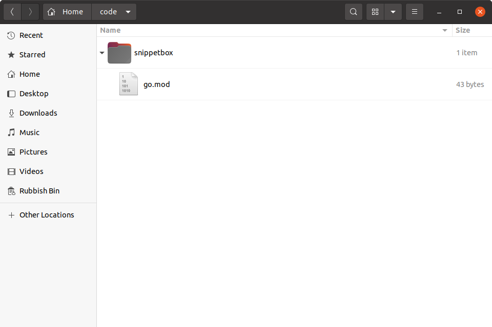

راهاندازی پروژه و ایجاد ماژول
قبل از نوشتن هر کدی، باید یک پوشه به نام snippetbox در کامپیوتر خود ایجاد کنید که به عنوان "خانه" اصلی این پروژه عمل کند. تمام کدهای Go که در طول این کتاب مینویسیم در اینجا قرار میگیرند، به همراه سایر فایلهای پروژه مانند قالبهای HTML و فایلهای CSS.
پس، اگر همراه ما هستید، ترمینال را باز کنید و یک پوشه پروژه جدید به نام snippetbox در هر جایی از کامپیوتر خود ایجاد کنید. من پوشه پروژه خود را در $HOME/code قرار میدهم، اما شما میتوانید مکان دیگری را انتخاب کنید.
$ mkdir -p $HOME/code/snippetbox
ایجاد ماژول
گام بعدی این است که یک مسیر ماژول برای پروژه خود انتخاب کنید.
اگر با ماژولهای Go آشنا نیستید، میتوانید مسیر ماژول را به عنوان یک نام یا شناسه استاندارد برای پروژه خود در نظر بگیرید.
شما میتوانید تقریباً هر رشتهای را به عنوان مسیر ماژول خود انتخاب کنید، اما نکته مهم تمرکز بر یکتا بودن است. برای جلوگیری از تداخل احتمالی با پروژههای دیگر افراد یا کتابخانه استاندارد در آینده، باید مسیر ماژولی را انتخاب کنید که در سطح جهانی یکتا باشد و احتمال استفاده مجدد آن توسط چیز دیگری کم باشد. در جامعه Go، یک قرارداد رایج این است که مسیرهای ماژول خود را بر اساس URLای که مالک آن هستید پایهگذاری کنید.
در مورد من، یک مسیر ماژول واضح، مختصر و کماحتمال برای استفاده توسط چیز دیگری برای این پروژه میتواند snippetbox.letsgofa.net باشد، و من از این در ادامه کتاب استفاده خواهم کرد. اگر ممکن است، بهتر است این را با چیزی که برای شما یکتا است جایگزین کنید.
پس از تصمیمگیری در مورد مسیر ماژول یکتا، گام بعدی تبدیل پوشه پروژه شما به یک ماژول است.
مطمئن شوید که در ریشه پوشه پروژه خود هستید و سپس دستور go mod init را اجرا کنید - مسیر ماژول انتخاب شده خود را به عنوان پارامتر به این صورت وارد کنید:
$ cd $HOME/code/snippetbox $ go mod init snippetbox.letsgofa.net go: creating new go.mod: module snippetbox.letsgofa.net
در این مرحله، پوشه پروژه شما باید کمی شبیه تصویر زیر باشد. آیا متوجه فایل go.mod که ایجاد شده هستید؟

در حال حاضر چیز زیادی در این فایل وجود ندارد، و اگر آن را در ویرایشگر متن خود باز کنید، باید به این شکل باشد (اما ترجیحاً با مسیر ماژول یکتای خود شما):
module snippetbox.letsgofa.net go 1.23.0
ما در مورد ماژولها در ادامه کتاب با جزئیات بیشتری صحبت خواهیم کرد، اما برای حالا کافی است بدانید که وقتی یک فایل go.mod معتبر در ریشه پوشه پروژه شما وجود دارد، پروژه شما یک ماژول است. راهاندازی پروژه شما به عنوان یک ماژول مزایای متعددی دارد - از جمله مدیریت آسانتر وابستگیهای شخص ثالث، اجتناب از حملات زنجیره تأمین، و اطمینان از ساختهای قابل تکرار برنامه شما در آینده.
سلام دنیا!
قبل از ادامه، بیایید سریعاً بررسی کنیم که همه چیز درست تنظیم شده است. یک فایل main.go جدید در پوشه پروژه خود ایجاد کنید که شامل کد زیر باشد:
$ touch main.go
package main import "fmt" func main() { fmt.Println("Hello world!") }
این فایل را ذخیره کنید، سپس از دستور go run . در ترمینال خود برای کامپایل و اجرای کد در دایرکتوری فعلی استفاده کنید. اگر همه چیز درست باشد، خروجی زیر را خواهید دید:
$ go run . Hello world!
اطلاعات تکمیلی
مسیرهای ماژول برای بستههای قابل دانلود
اگر در حال ایجاد پروژهای هستید که میتواند توسط افراد و برنامههای دیگر دانلود و استفاده شود، پس خوب است که مسیر ماژول شما برابر با مکانی باشد که کد میتواند از آن دانلود شود.
برای مثال، اگر بسته شما در https://github.com/foo/bar میزبانی میشود، پس مسیر ماژول پروژه باید github.com/foo/bar باشد.